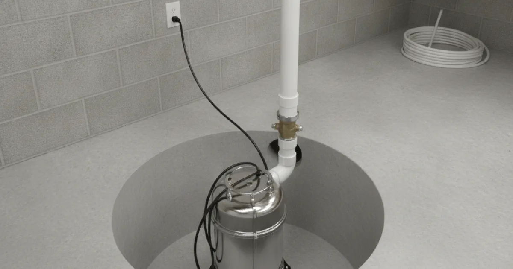
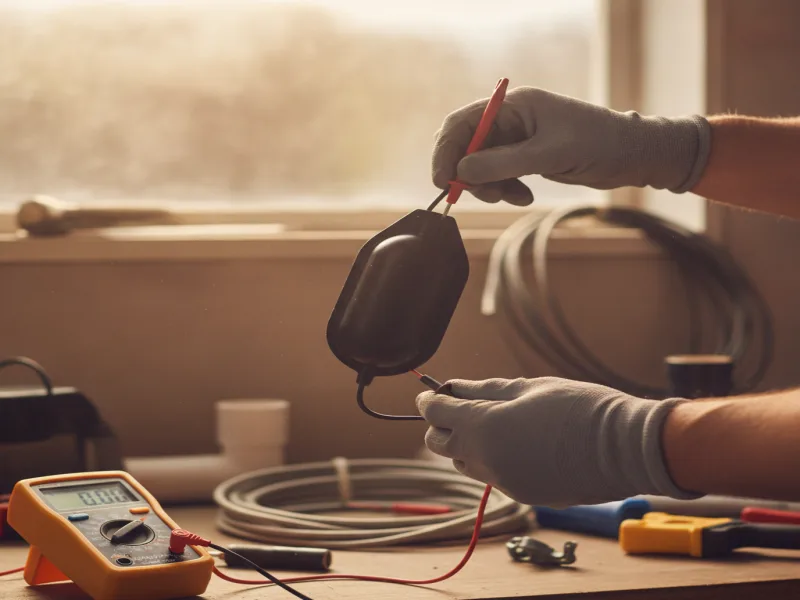

Sump Pump Installation in Armonk, NY
A properly sized, correctly installed sump pump is one of the simplest ways to keep a finished basement dry through heavy rain and snowmelt.
- Licensed & Insured
- Same-Day Service Available
- Upfront Pricing
- 15+ Years of Experience

How sump pump installation works
We start by looking at where water tends to collect around your foundation and how your basement is set up, since that determines both pump placement and sizing. From there, we install (or locate) a sump pit at the lowest point of the basement floor, set the pump inside it, and run discharge piping away from your foundation so ejected water doesn't just work its way back in.
We also install a check valve to stop water from flowing back into the pit between pump cycles, and we test the whole system by filling the pit and confirming the pump activates and discharges properly. If your setup would benefit from it, we'll talk through battery backup options so the pump keeps running if the power goes out during a storm.

What affects the cost
- Whether a sump pit already exists. Installing a new pit adds labor compared to replacing a pump in an existing one.
- Pump horsepower and capacity. Larger basements or higher water tables call for a stronger pump.
- Discharge line routing. How far the water needs to travel to drain safely away from your foundation affects piping costs.
- Battery backup. Adding backup power for storm-related outages is optional but increases the total cost.
- Basement layout. Finished basements sometimes require more care to route piping without disturbing existing walls or flooring.
Local factors in Armonk
Finished basements are common throughout Armonk and the surrounding Westchester County towns, which raises the stakes when it comes to keeping water out. A basement that's just storage can tolerate a little dampness. A basement with flooring, drywall, and furniture in it can't. Spring rain in this area can be heavy and sustained, and combined with snowmelt working its way into the ground, it puts real pressure on a home's foundation drainage.
We size pumps based on what your specific property actually experiences, not a generic estimate, because an undersized pump in a wet spring is functionally the same as not having one at all.
Take a look at the full scope of services we offer for everything else we handle beyond sump pumps.
Keeping your basement protected
A sump pump only works if it's maintained. We recommend testing yours before spring rains start each year by pouring water into the pit and confirming the pump activates and drains properly. Beyond the pump itself, pairing it with adding a water leak sensor for extra protection gives you an early alert if water shows up somewhere the pump isn't catching it, and a regular plumbing maintenance check catches small issues, like a sticking float switch, before they turn into a flooded basement.
According to FEMA's guidance on flood protection, even homes outside a mapped flood zone can experience basement flooding from heavy local rainfall, which is exactly the kind of risk a sump pump is built to handle.
When to call a pro
Call us if your basement has flooded even once, if your current pump is older and you're not sure how it's holding up, or if you've never had one installed and you're finishing a basement for the first time. It's much easier to install a pump before water damage happens than to deal with the cleanup and repairs after.
See our basement and drainage-adjacent plumbing work for more of what we handle around your foundation and basement.
Frequently asked questions
How do I know what size sump pump I need?
It depends on your basement's size, how much water your property typically sees, and how quickly water tends to collect during heavy rain. We assess this on-site before recommending a specific pump.
Do I need a battery backup for my sump pump?
It's worth considering if your area loses power during storms, since that's often exactly when the pump is working hardest. We can walk you through whether it makes sense for your home.
How long does sump pump installation take?
Installing a pump into an existing pit is usually a same-day job. Installing a new sump pit takes longer, since it involves breaking through the basement floor.
How often should I test my sump pump?
We recommend testing it at least once a year, ideally before the spring rainy season, by pouring water into the pit and confirming it activates.
Can you install a sump pump in a finished basement?
Yes. We take extra care routing discharge piping and locating the pit so we don't disturb existing flooring, drywall, or finishing work more than necessary.
My sump pump runs constantly. Is that normal?
Not usually. That can mean the pump is undersized, the float switch is malfunctioning, or there's an unusually high water table around your foundation. Worth having checked.